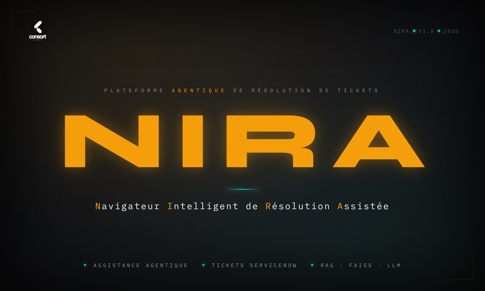
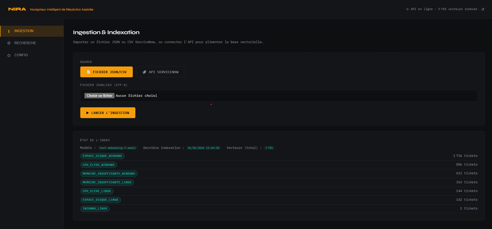
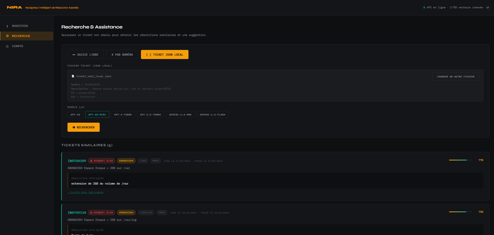
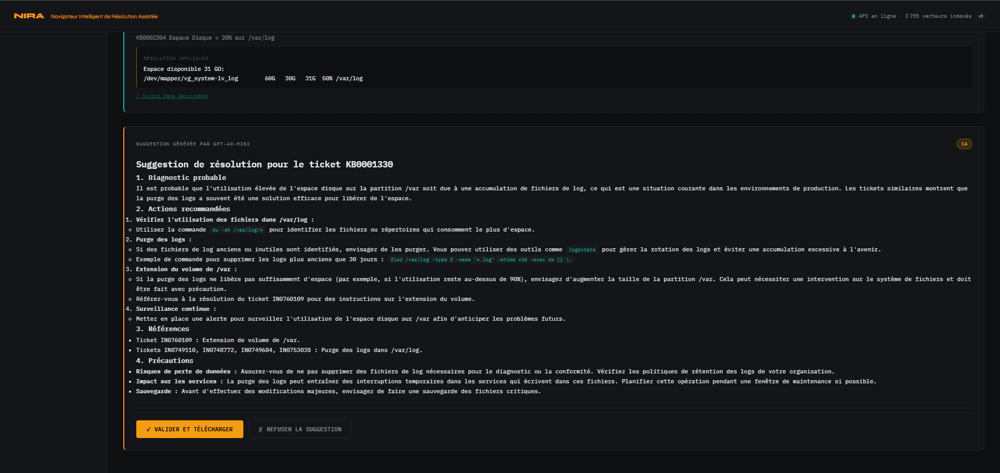
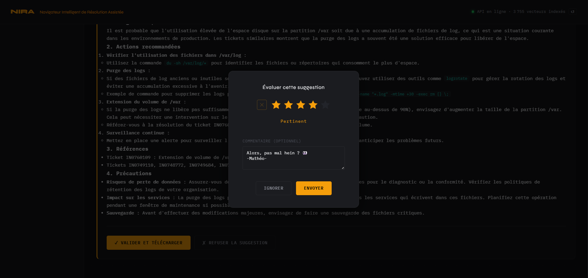
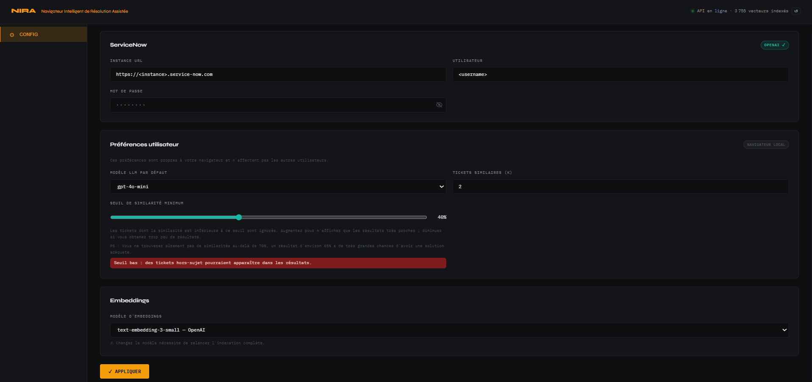
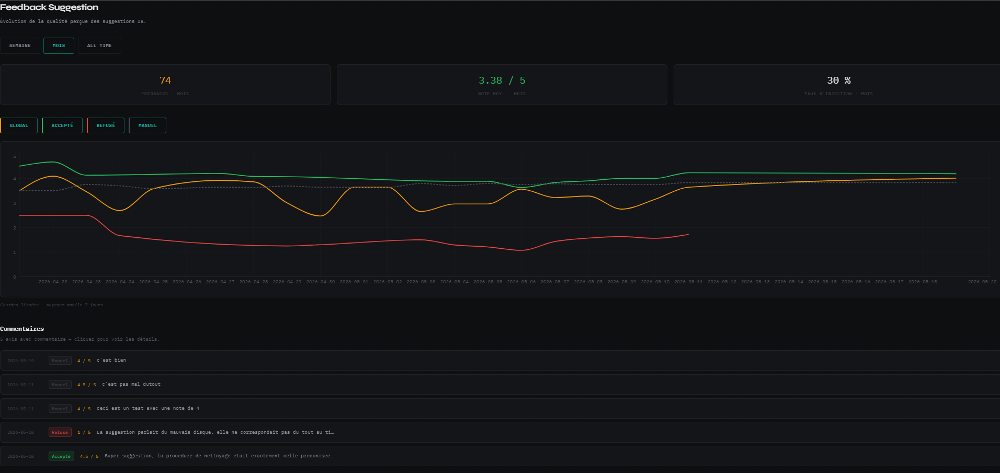

NIRA - Navigateur Intelligent de Résolution Assistée
Description du Projet
NIRA est une plateforme d'assistance à la résolution de tickets d'incidents. L'objectif est d'aider les techniciens de supervision à traiter plus rapidement les tickets en leur proposant automatiquement des pistes de résolution issues de cas similaires déjà résolus dans le passé.
Ce projet a était réalisé dans le cadre de ma deuxième années en BUT Informatique, lors d'un stage de 3 mois chez Consort. Il fût sous la supervision de mon tuteur de stage et d'autre salariés de l'entreprise (Stephane Huret, David Nowak, Gregory Fourez)
Le principe est simple : lorsqu'un nouveau ticket arrive, NIRA cherche dans son historique les tickets qui ressemblent le plus à celui-ci, puis génère une suggestion de résolution claire et synthétique. Le technicien garde la main et peut, s'il le souhaite, injecter directement cette suggestion dans l'outil de ticketing et de transmettre un avis sur l'expérience de suggestion reçue.
Une page a été dédiée, hors navigation principale, afin d'exposer les statistiques sur la durée choisie : Semaine /Mois / All time. Elle affiche trois données récapitulatives sur la période sélectionnée : nombre d'avis total, note moyenne de l'ensemble des avis et taux d'injection. Ainsi qu'un graphique linéaire avec courbes lissées
Techniquement, les tickets résolus sont nettoyés puis transformés en vecteurs d'embeddings indexés dans FAISS, ce qui permet une recherche sémantique par similarité rapide et efficace. Les suggestions de résolution sont ensuite générées par un LLM (GPT-4o ou Gemini selon les préférences) à partir des cas similaires retrouvés, le tout orchestré via des agents LangGraph.
Le projet a été pensé pour s'étendre facilement à plusieurs types d'incidents(espace disque, CPU, mémoire, etc.) et propose une interface web permettant d'ingérer un historique de tickets, de configurer les modèles utilisés et de visualiser les suggestions générées.
Galerie d'images







Code source et livrables non publics
NIRA a été développé dans le cadre d'un projet d'entreprise pour un client. Le code source, les données et l'application déployée restent la propriété de Consort et de son client : ils ne peuvent donc pas être diffusés ni mis à disposition au téléchargement sur ce CV.
Pour toute précision technique ou pour discuter de ce projet dans un cadre professionnel, n'hésitez pas à me contacter directement.